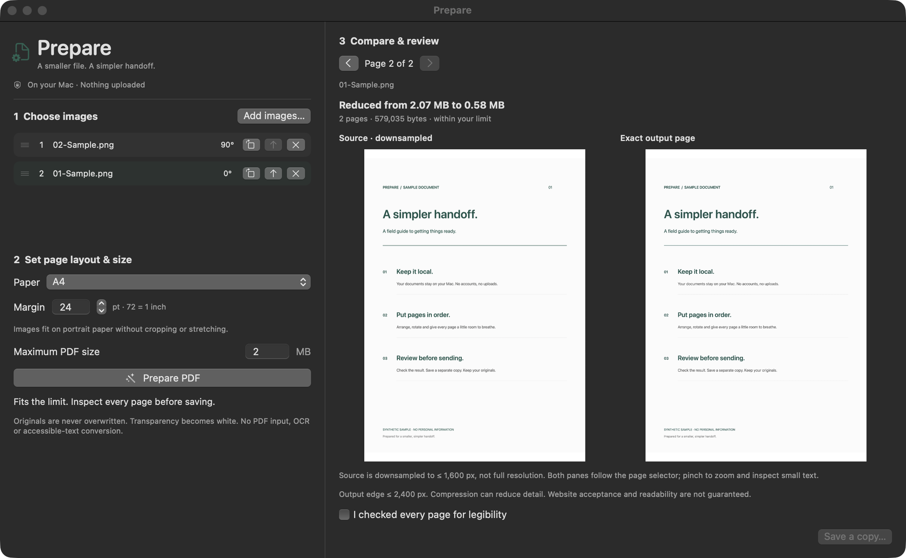

Put every page
in its place.
Drop in JPEG, PNG or HEIC images. Drag to reorder. Rotate individual pages. Choose image-aspect, A4 or US Letter pages and set your margins.
LOCAL BY DESIGN. NATIVE BY NATURE.
Your scans and photos. One clean PDF that fits.
Prepared on your Mac, not someone else’s server.
Ad-hoc signed, not notarized. Read before opening.
Use is subject to the Hippocratic License 3.0 core.
LESS FRICTION. MORE FINISHED.
An application portal says “2 MB maximum.” Your images say otherwise. Prepare takes care of the in-between.
Drop in JPEG, PNG or HEIC images. Drag to reorder. Rotate individual pages. Choose image-aspect, A4 or US Letter pages and set your margins.
Choose a size limit. Prepare tries a bounded set of compression settings and checks the finished PDF. If it cannot fit, it tells you instead of quietly breaking your limit.
Compare a downsampled source preview with the actual PDF, page by page. Check the details, acknowledge your review, then save a separate copy.
SMALL TOOL. THOUGHTFUL CONTROLS.
Native controls. A readable preview. No browser tabs full of your private paperwork.
Drag pages, or use the move buttons.
Per-page quarter turns, after EXIF orientation.
Paper presets and custom point-based margins.

PRIVATE IS NOT A SETTING.
Prepare does its work with Apple’s on-device frameworks. There is no server, analytics SDK, account system or AI service in the app. It works offline.
Original files stay untouched. Source metadata dictionaries, including EXIF and GPS, aren’t copied into the PDF.
Privacy has limits worth explaining: visible content remains visible, standard PDF metadata may remain, and files in synced folders still follow your sync settings. The app is not sandboxed or a redaction tool.
Read the full privacy boundariesBEFORE YOU BEGIN
Download the ZIP, expand it and drag Prepare.app to Applications. The release is built for Apple Silicon and macOS 14 or later.
It is ad-hoc signed, not Apple-notarized. If macOS blocks it, review the source and checksum before deciding whether to approve it in System Settings → Privacy & Security after attempting to open it. Do not disable Gatekeeper globally. Managed Macs may not permit it.
You can also build from source. Release notes and SHA-256 checksum ↗
Up to 20 single-frame JPEG, PNG or HEIC images. Each image can be up to 40 MB, 80 megapixels and 20,000 pixels per dimension. Existing PDFs and animated images are deliberately not supported. The size target is 0.01–100 decimal MB.
Not always. Prepare uses lossy JPEG encoding and may reduce resolution. It stops at a defined quality floor and reports when a limit cannot be met. The side-by-side source is downsampled, not a pixel-for-pixel comparison. Inspect the output before saving. Output is an image-based PDF, without OCR or tagged accessibility structure.
The complete source is public, and contributions are welcome. Prepare uses the Hippocratic License 3.0 core, an ethical-source license with restrictions on harmful uses. It is not an OSI-approved open-source license. Read the full terms.
No. This is a static project website hosted on GitHub Pages. It has no upload form, third-party scripts, fonts, cookies or analytics added by Prepare. GitHub handles normal hosting and download traffic. All document processing happens in the Mac app.
Local. Native. Yours to inspect.